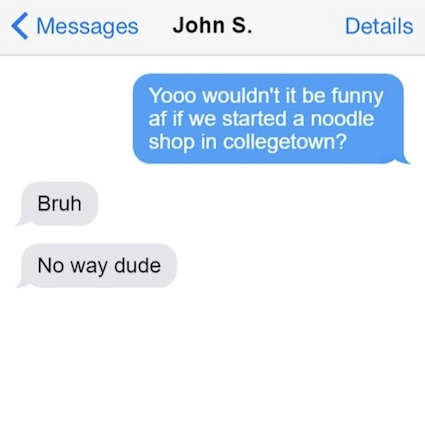

Bool Street Noodles was started by a group of friends out of Collegetown in early March. We are proud to say that what began as a joke idea among a group of friends has now flourished into a fully functioning business! We are Bool Street Noods - A group of students whose mission is to sell tasty affordable food to students in Collegetown.
Our founding story was a joke...literally.
